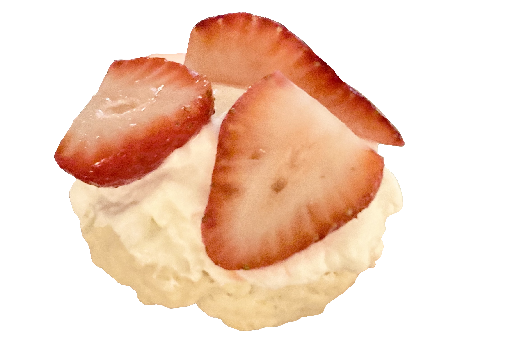

Hi!
I'm Carolyn. I like making things, taking naps, and petting cats.

I'm interested in the open ocean, clean tech, human-centered design, learning new things, and getting better at explaining new things. I'm currently trying to implement local storage for my app, Meatless.
Projects
I took time off school in spring 2021 to learn how to build things. What I'm most proud of:
Meatless
A native app to help people who want to eat less meat find meatless dishes near them. It was my first time working with webscraping, natural language processing, MongoDB, Figma components, and Flutter. It took me a few months to get it functional, but I definitely learned a lot!
Empower
A hackathon project for Asian American community members to report crimes and request help for everyday tasks. It was meant to serve as a tool to enhance safety and connectivity in communities.
Coral Generator
A quick build inspired by Blue Planet II (voiced by David Attenborough). It generates cute coral seascapes for use as wallpapers/zoom backgrounds.
Pomodoer
My first-ever hack: a tool to help students studying together remotely stay productive. Although not much got done during the hackathon itself, I was so invested in the idea that I completed it on my own afterwards.
Crafts
I'm constantly crafting! What I've been up to recently:
Chinese Knotting
My latest pandemic obsession! I started with making little charms, and now I'm working on all sorts of beaded bracelets. Maybe eventually I'll make a jacket out of knots??

Painting
Oil painting was a big part of my teens and will always hold a special place in my heart. Here are some works I'm most proud of!
Baking
Sweets keep me going! My favorite recipes:
Easy Strawberry Shortcakes
A super quick recipe for a refreshing and light dessert/snack. These are so tasty and easy to eat that I can eat all eight of the shortcakes this recipe makes in a couple hours!
Fudgy Brownies
The most decadent brownies you’ve ever tasted!! I like to make these at the beginning of the week and leave them around to snack on. What makes them so consistently good is actually the use of only cocoa powder and no chocolate. This is because without the variable fat and sugar content of chocolate, you can better control the proportions of both in the recipe.